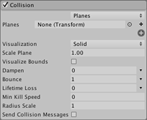
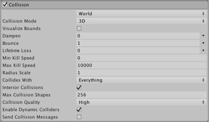

Collision module
This module controls how particles collide with GameObjects in the Scene. Use the first drop-down to define whether your collision settings apply to Planes or to the World. If you choose World, use the Collision Mode drop-down to define whether your collision settings apply for a 2D or 3D world.
Planes module properties

| Property | Function |
|---|---|
| Planes popup | Select Planes mode. |
| Planes | An expandable list of Transforms that define collision planes. |
| Visualization | Selects whether the collision plane Gizmos will be shown in the Scene view as wireframe grids or solid planes. |
| Scale Plane | Size of planes used for visualization. |
| Dampen | The fraction of a particle's speed that it loses after a collision. |
| Bounce | The fraction of a particle's speed that rebounds from a surface after a collision. |
| Lifetime Loss | The fraction of a particle's total lifetime that it loses if it collides. |
| Min Kill Speed | Particles travelling below this speed after a collision will be removed from the system. |
| Max Kill Speed | Particles travelling above this speed after a collision will be removed from the system. |
| Radius Scale | Allows you to adjust the radius of the particle collision spheres so it more closely fits the visual edges of the particle graphic. |
| Send Collision Messages | If enabled, particle collisions can be detected from scripts by the OnParticleCollision function. |
| Visualize Bounds | Renders the collision bounds of each particle as a wireframe shape in the Scene view. |
World module properties

| Property | Function |
|---|---|
| World popup | Select World mode. |
| Collision Mode | 3D or 2D. |
| Dampen | The fraction of a particle's speed that it loses after a collision. |
| Bounce | The fraction of a particle's speed that rebounds from a surface after a collision. |
| Lifetime Loss | The fraction of a particle's total lifetime that it loses if it collides. |
| Min Kill Speed | Particles travelling below this speed after a collision will be removed from the system. |
| Max Kill Speed | Particles travelling above this speed after a collision will be removed from the system. |
| Radius Scale | Setting for 2D or 3D. |
| Collision Quality | Use the drop-down to set the quality of particle collisions. This affects how many particles can pass through a collider. At lower quality levels, particles can sometimes pass through colliders, but are less resource-intensive to calculate. |
| High | When Collision Quality is set to High, collisions always use the physics system for detecting the collision results. This is the most resource-intensive option, but also the most accurate. |
| Medium (Static Colliders) | When Collision Quality is set to Medium (Static Colliders), collisions use a grid of voxels to cache previous collisions, for faster re-use in later frames. See World collisions, below, to learn more about this cache. The only difference between Medium and Low is how many times per frame the Particle System queries the physics system. Medium makes more queries per frame than Low. Note that this setting is only suitable for static colliders that never move. |
| Low (Static Colliders) | When Collision Quality is set to Low (Static Colliders), collisions use a grid of voxels to cache previous collisions, for faster re-use in later frames. See World collisions, below, to learn more about this cache. The only difference between Medium and Low is how many times per frame the Particle System queries the physics system. Medium makes more queries per frame than Low. Note that this setting is only suitable for static colliders that never move. |
| Collides With | Particles will only collide with objects on the selected layers. |
| Max Collision Shapes | How many collision shapes can be considered for particle collisions. Excess shapes are ignored, and terrains take priority. |
| Enable Dynamic Colliders | Allows the particles to also collide with dynamic objects (otherwise only static objects are used). |
| Enable Dynamic Colliders | Dynamic colliders are any collider not configured as Kinematic (see documentation on colliders for further information on collider types). Check this option to include these collider types in the set of objects that the particles respond to in collisions. Uncheck this option and the particles only respond to collisions against static colliders. |
| Voxel Size | A voxel represents a value on a regular grid in three-dimensional space. When using Medium or Low quality collisions, Unity caches collisions in a grid structure. This setting controls the grid size. Smaller values give more accuracy, but cost more memory, and are less efficient. Note: You can only access this property when Collision Quality is set to Medium or Low. |
| Collider Force | Apply a force to Physics Colliders after a Particle collision. This is useful for pushing colliders with particles. |
| Multiply by Collision Angle | When applying forces to Colliders, scale the strength of the force based on the collision angle between the particle and the collider. Grazing angles will generate less force than a head-on collision. |
| Multiply by Particle Speed | When applying forces to Colliders, scale the strength of the force based on the speed of the particle. Fast-moving particles will generate more force than slower ones. |
| Multiply by Particle Size | When applying forces to Colliders, scale the strength of the force based on the size of the particle. Larger particles will generate more force than smaller ones. |
| Send Collision Messages | Check this to be able to detect particle collisions from scripts by the OnParticleCollision function. |
| Visualize Bounds | Preview the collision spheres for each particle in the Scene view. |
Details
When other objects surround a Particle System, the effect is often more convincing when the particles interact with those objects. For example, water or debris should be obstructed by a solid wall rather than simply passing through it. With the Collision module enabled, particles can collide with objects in the Scene.
A Particle System can be set so its particles collide with any Collider in the scene by selecting World mode from the pop-up. Colliders can also be disabled according to the layer they are on by using the Collides With property. The pop-up also has a Planes mode option which allows you to add a set of planes to the Scene that don’t need to have Colliders. This option is useful for simple floors, walls and similar objects, and has a lower processor overhead than World mode.
When Planes mode is enabled, a list of transforms (typically empty GameObjects) can be added via the Planes property. The planes extend infinitely in the objects’ local XZ planes, with the positive Y axis indicating the planes’ normal vectors. To assist with development, the planes will be shown as Gizmos in the Scene, regardless of whether or not the objects have any visible Mesh themselves. The Gizmos can be shown as a wireframe grid or a solid plane, and can also be scaled. However, the scaling only applies to the visualization - the collision planes themselves extend infinitely through the Scene.
When collisions are enabled, the size of a particle is sometimes a problem because its graphic can be clipped as it makes contact with a surface. This can result in a particle appearing to "sink" partway into a surface before stopping or bouncing. The Radius Scale property addresses this issue by defining an approximate circular radius for the particles, as a percentage of its actual size. This size information is used to prevent clipping and avoid the sinking-in effect.
The Dampen and Bounce properties are useful for when the particles represent solid objects. For example, gravel will tend to bounce off a hard surface when thrown but a snowball's particles might lose speed during a collision. Lifetime Loss and Min Kill Speed can help to reduce the effects of residual particles following a collision. For example, a fireball might last for a few seconds while flying through the air but after colliding, the separate fire particles should dissipate quickly.
You can also detect particle collisions from a script if Send Collision Messages is enabled. The script can be attached to the object with the particle system, or the one with the Collider, or both. By detecting collisions, you can use particles as active objects in gameplay, for example as projectiles, magic spells and power-ups. See the script reference page for MonoBehaviour.OnParticleCollision for further details and examples.
World Collision Quality
The World Collision module has a Collision Quality property, which you can set to High, Medium or Low. When Collision Quality is set to Medium (Static Colliders) or Low (Static Colliders), collisions use a grid of voxels (values on a 3D grid) to cache previous collisions, for fast re-use in later frames.
This cache consists of a plane in each voxel, where the plane represents the collision surface at that location. On each frame, Unity checks the cache for a plane at the position of the particle, and if there is one, Unity uses it for collision detection. Otherwise, it asks the physics system. If a collision is returned, it is added to the cache for fast querying on subsequent frames.
This is an approximation, so some missed collisions might occur. You can reduce the Voxel Size value to help with this; however, doing so uses extra memory, and is less efficient.
The only difference between Medium and Low is how many times per frame the system is allowed to query the physics system. Low makes fewer queries per frame than Medium. Once the per-frame budget has been exceeded, only the cache is used for any remaining particles. This can lead to an increase in missed collisions, until the cache has been more comprehensively populated.